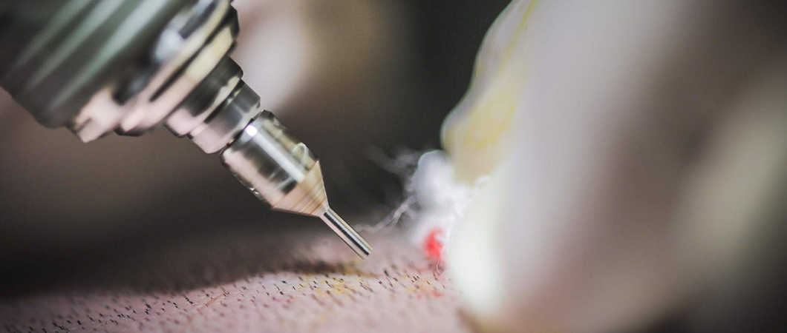

The beard has a significant impact on a man’s attractiveness and appearance, and while most men want to grow a thick and full beard, not every man get to have a natural, full and dense beard due to various reason including genetics and other factors, but no man has to worry about this anymore, thanks to the technology of beard transplantation, you can get the beard you always wanted!
Beard transplant is considered the effective solution for those whose beards lack thickness or those who have lost some of their beards secondary to scars or burns.
In a beard transplant, hair follicles are taken from areas that have high hair density and transplanted into the areas that lack thickness in the beard or mustache.
According to recent statistics, Turkey has seen an increase of 110% in the number of men wanting to get beard or mustache transplants in Turkey compared to previous years, and the reason behind that may be accounted for by the development of this technology in Turkey’s hospitals and its specialized medical centers.
The follicles from the donor area are collected using the FUE technique, causing no skin scarring, then the individual follicles are implanted carefully into the beard one by one, taking into consideration the angle, and the depth to achieve the best aesthetic result and to gain a 100% natural beard, and lifelong growth.
Contrary to what some commercial companies promote, the effectiveness of any treatment or medication; has not been proven to stimulate hair growth in the areas where hair never grows, and this applies to beard and mustache, that is why hair transplant for men remains the only successful solution so far!

How is the beard and moustache transplant operation done?
In a facial hair transplant, we collect follicles from the back of the scalp or the area above the ear until we reach the required number of follicles to get good coverage for the recipient area.
Hair follicles are preserved in a special solution with the aim of keeping them sound and healthy until the implantation phase using the DHI technique begins. In the implantation phase, the grafts are implanted carefully in the recipient area in the beard, considering the angle of implantation, the depth, and the direction of the hair, to gain the best aesthetic result possible, and to get a more natural look.
While, the results start appearing about two to three months after the procedure, the final result takes more time as the volume of the hair gradually increases over time until it reaches its full density.
Beard Transplant Steps in Turkey
The shape of your future beard is designed according to your desire, taking into account the symmetry between both sides and the consistency in beard appearance, according to the following steps:
- The doctor calculates the required number of hair follicles
- Determining the appropriate type of follicles to reach a natural result and a good density.
- Extracting follicles from the donor area according to the appropriate conditions.
- Implanting the follicles into the beard and mustache according to the specified design.
Beard Transplant Steps
The doctor calculates the required number of hair follicles
The doctor determines the appropriate type of follicles to reach a natural result and a good density
The doctor extracts the follicles from the donor area, according to the appropriate conditions
The doctor implants the extracted follicles in the beard and moustache according to the specified design
How long does Beard and mustache transplant operation take?
The time that beard and moustache transplant takes may differ from person to another according to the beard size and the number of follicles, but on average, it takes from two to four hours for the procedure to be done.
In the beard transplant procedure, we implant grafts one by one delicately that every hair gets to point in the right direction to get the desired aesthetic result.
Do you have an inquiry? Contact us - For FREE Consultation.
Ilajak Medical©| A passion for care!